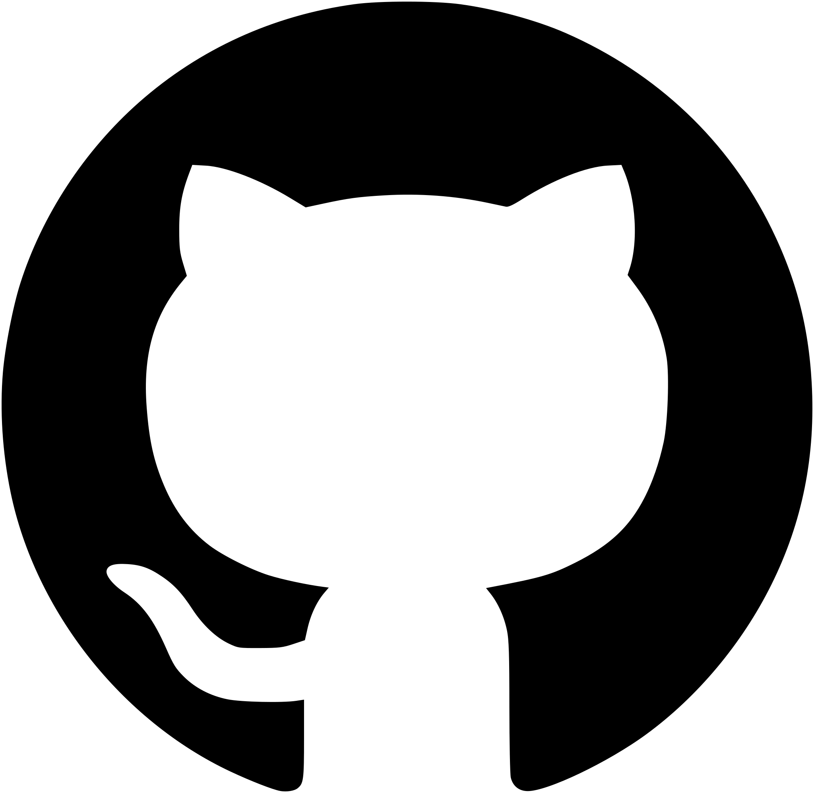
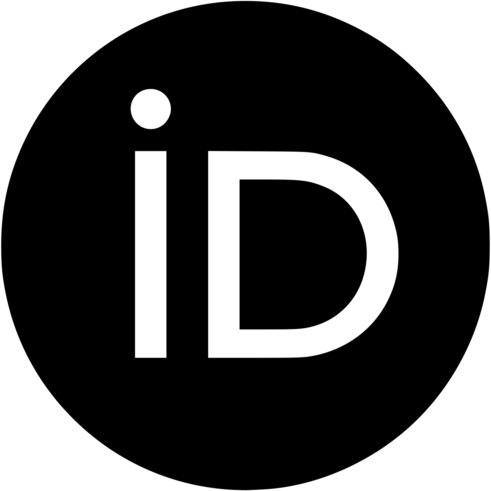

Research scientist at a probabilistic computing startup since 2023.
Graduated in 2023 with a Ph.D. in physics at the University of Toronto, under the supervision of Professor Arun Paramekanti. Research in theoretical Condensed Matter Physics: topological states of matter, strongly correlated electron systems, etc.

GitHub
ORCİD
Taming nonequilibrium thermal fluctuations in subthreshold CMOS circuits.
N. Freitas, G. Massarelli, J. Rothschild, D. Keane, E. Dawe, S. Hwang, A. Garlapati, T. McCourt.
Phys. Rev. Applied 25, 034061 (2026).
Improved diffusive approximation of Markov jump processes close to equilibrium.
D. Roberts, T. McCourt, G. Massarelli, J. Rothschild, N. Freitas.
Phys. Rev. Research 8, 013161 (2026) | arXiv:2512.14088.
Krein-unitary Schrieffer-Wolff transformation and band touchings in bosonic Bogoliubov–de Gennes and other Krein-Hermitian Hamiltonians.
G. Massarelli, I. Khait, A. Paramekanti.
Phys. Rev. B 106, 144434 (2022) | arXiv:2201.10580.
Higher-order topology and corner triplon excitations in two-dimensional quantum spin-dimer models.
A. Haldar, G. Massarelli, A. Paramekanti.
Phys. Rev. B 104, 184403 (2021) | arXiv:2104.12791.
Orbital Edelstein effect from density-wave order.
G. Massarelli, B. Wu, A. Paramekanti.
Phys. Rev. B 100, 075136 (2019) | arXiv:1904.04280.
Pseudo-Landau levels of Bogoliubov quasiparticles in strained nodal superconductors.
G. Massarelli, G. Wachtel, J. Y. T. Wei, A. Paramekanti.
Phys. Rev. B 96, 224516 (2017) | arXiv:1707.07683.
Dynamic compression of single nanochannel confined DNA via a nanodozer assay.
A. Khorshid, P. Zimny, D. Tétreault–La Roche, G. Massarelli, T. Sakaue, W. Reisner.
Phys. Rev. Lett. 113, 268104 (2014).
2016—2023
Ph.D. Physics, University of Toronto
Awarded the 2024 P. R. Wallace Thesis Prize
2014—2016
M.Sc. Physics, McGill University
2011—2014
B.Sc. Honours Physics, McGill University
CAP 2024 Theory Canada Conference, Waterloo, Ontario.
Keynote talk entitled
The Properties of Dirac Materials: Strain, Magnetoelectrics and Krein-Hermiticity
(Ph.D Prize talk)
APS March Meeting 2021 (online).
Presented talk entitled
Para-Hermitian perturbation theory and nodal lines in magnon systems.
CIFAR April 2019 Quantum Materials Program Meeting, Vancouver, British Columbia.
Presented poster entitled
Orbital Edelstein effect from density-wave order.
APS March Meeting 2019, Boston, Massachusetts.
Presented talk entitled
Orbital Edelstein Effect from Spontaneous Symmetry Breaking.
International Summer School on Computational Quantum Materials 2018, Orford, Québec.
APS March Meeting 2018, Los Angeles, California.
Presented talk entitled
Pseudo-Landau Levels of Bogoliubov Quasiparticles in Strained Nodal Superconductors.
Last updated March 2026.